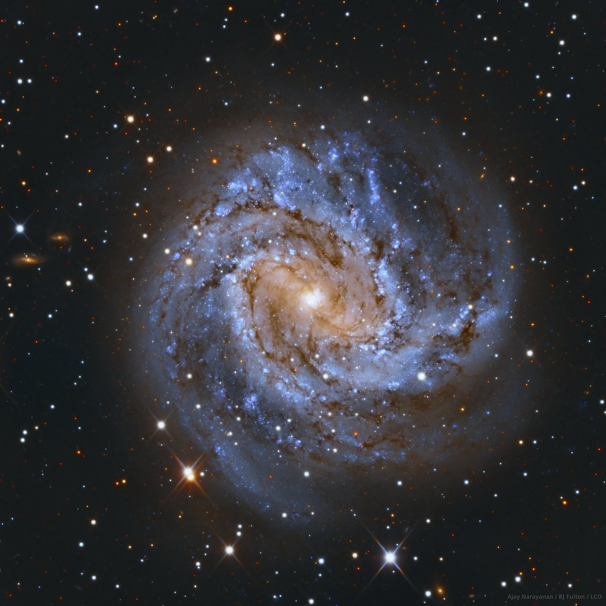
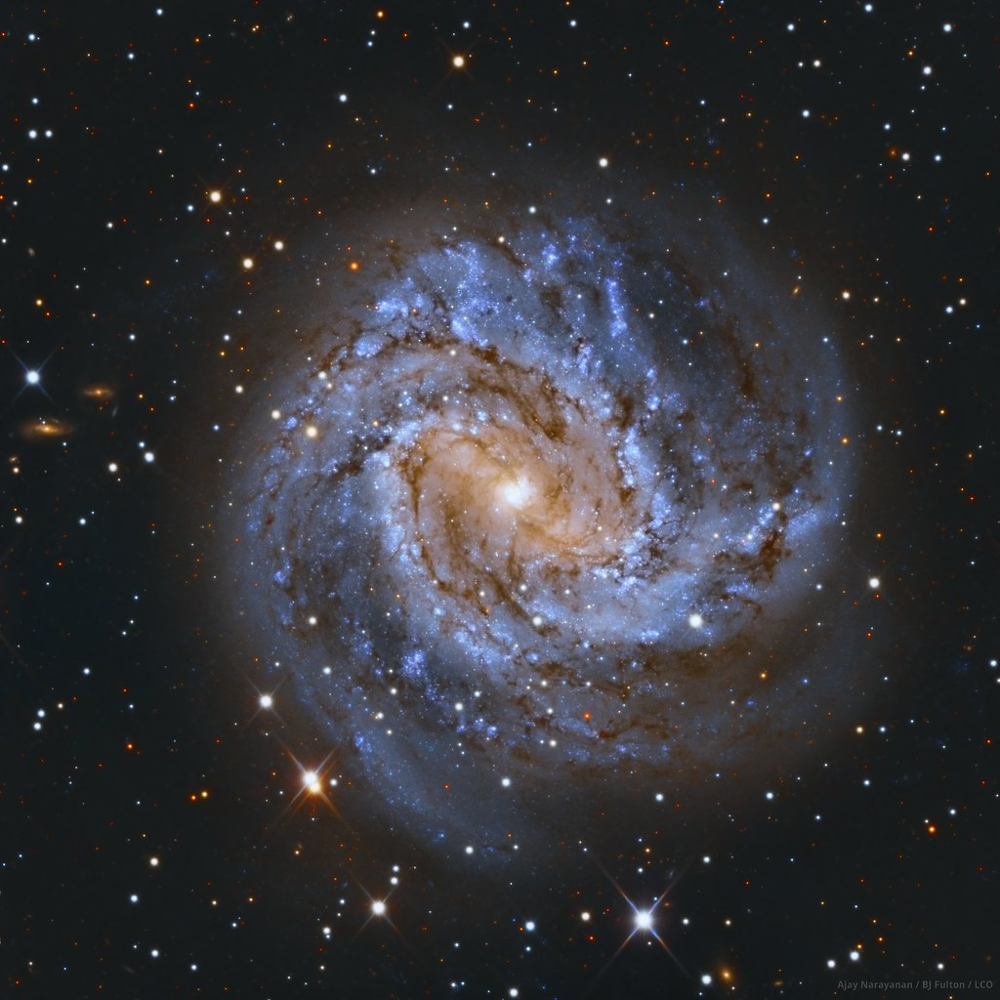
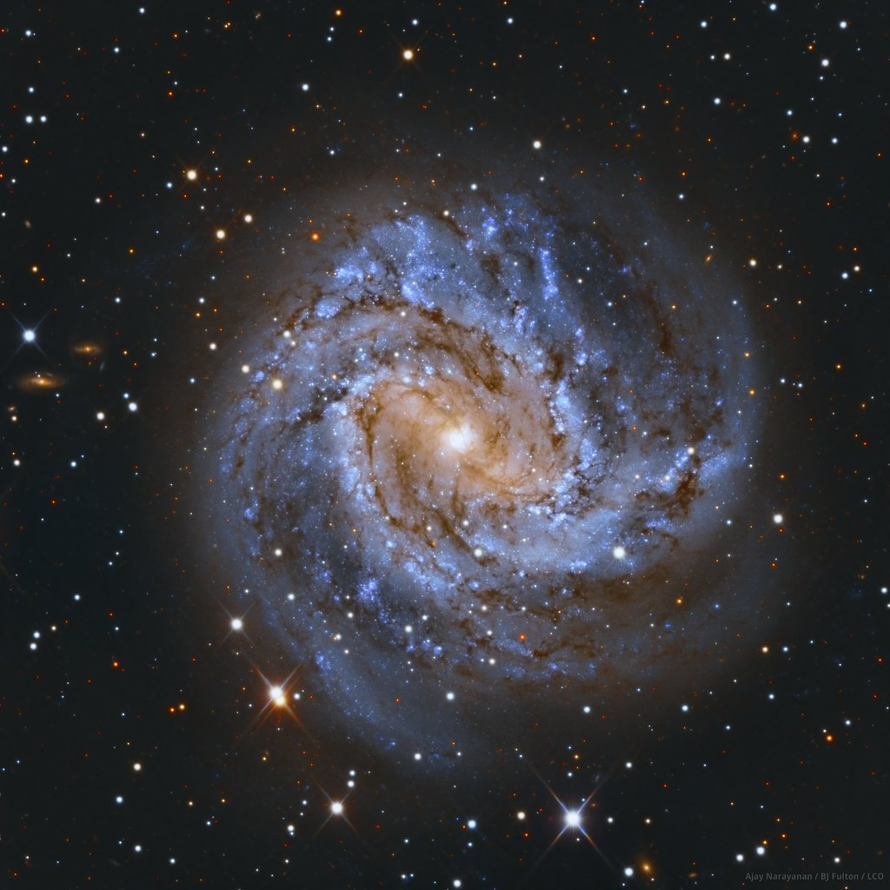
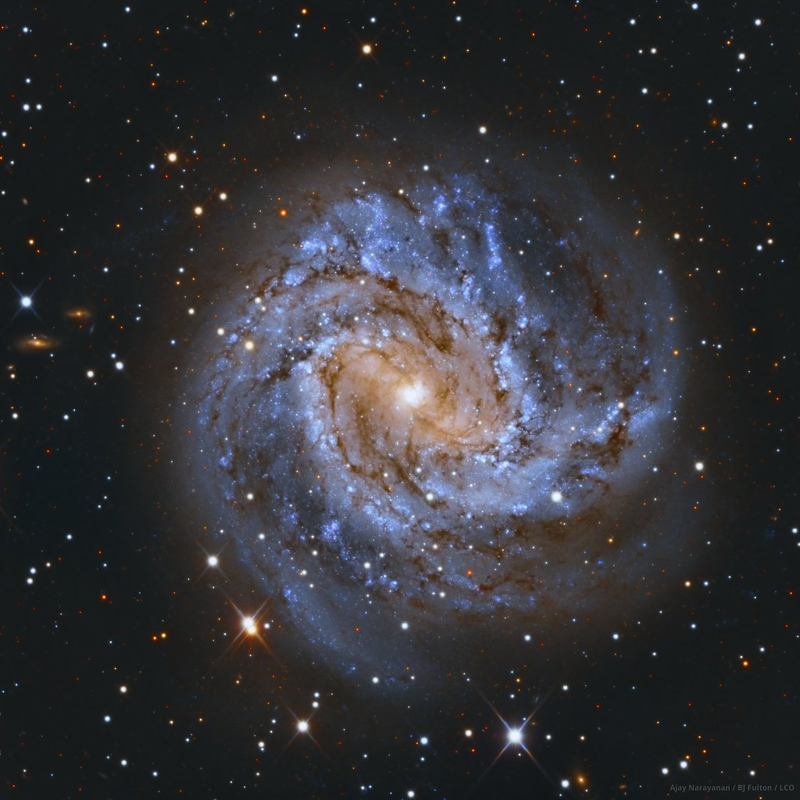

 

Like many, I was astounded by the first images published from the James Webb Space Telescope. The vibrant nebulas and galaxy clusters were an awe-inspiring reminder of the beautiful universe we live in. It also reignited a wish I had as a child, to take pictures of these celestial wonders. Of course, it is nearly impossible to match the quality of a 6.5 meter aperture, but you can still render outstanding photos of galaxies with telescopes a fraction of the size of the James Webb Telescope. If you have the right telescope, you will be able to appreciate a galaxy like M101, as seen above. Thus, in this guide, I will give you the information, telescopes, cameras, and other necessary accessories needed to create stunning photos of other galaxies.